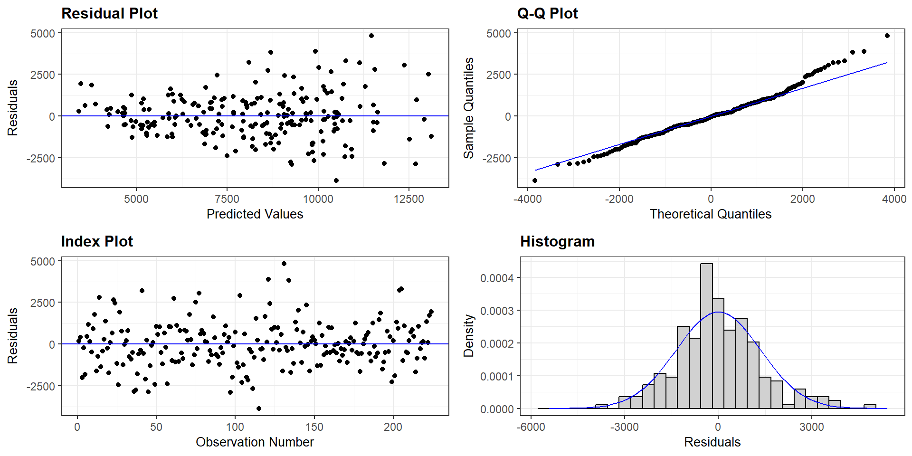
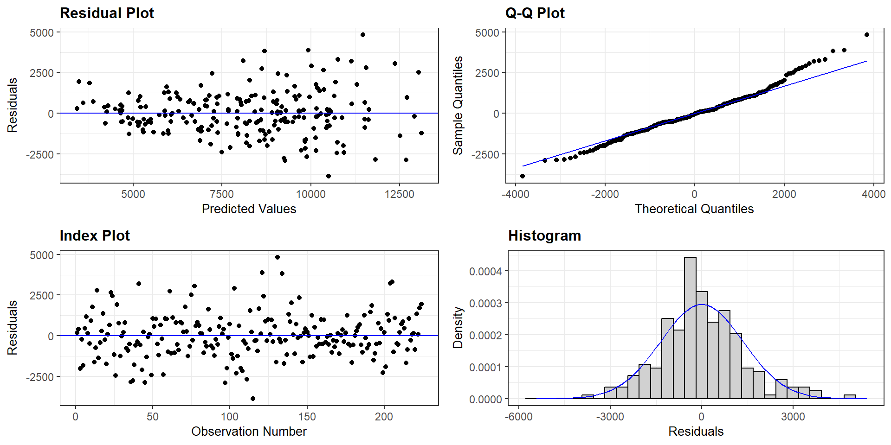
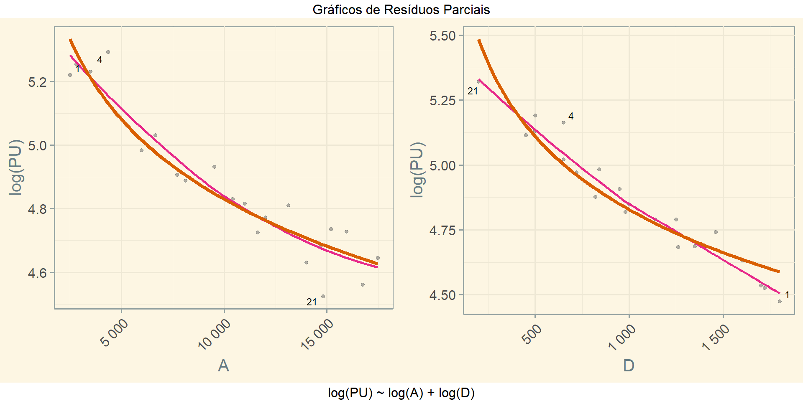
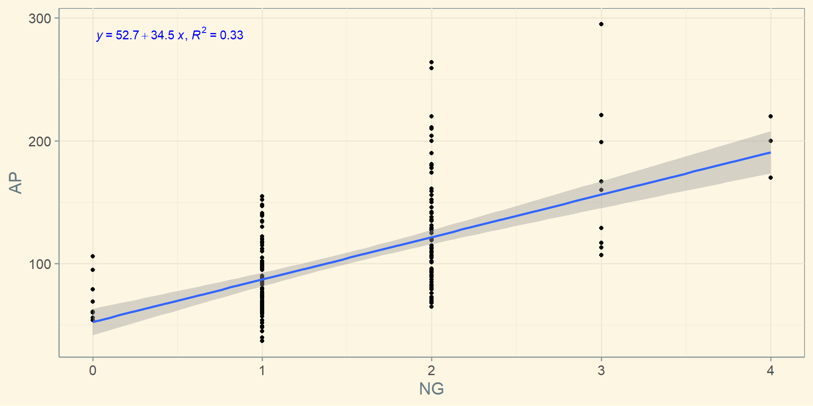
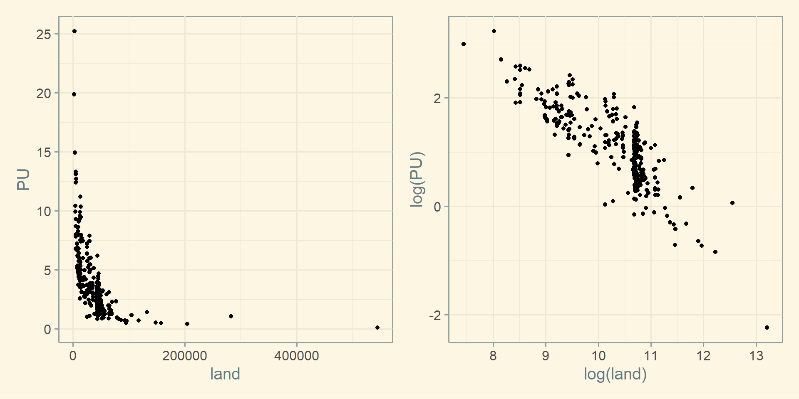

Fatores Multiplicativos Fundamentados
Academia da Engenharia de Avaliações
25 de julho de 2025
Comunicação não é o que você fala, é o que o outro entende!
O Tratamento Científico trouxe consistência para a Engenharia de Avaliações
O Tratamento por Fatores, contudo, não deixou de ser utilizado
A consistência alcançada com o Tratamento Científico deu-se a custa de uma perda na clareza da comunicação
É possível conciliar?
Há outra utilidade, além da clareza, na utilização do tratamento por fatores?
Na confecção de Plantas de Valores Genéricos (PVG):
A utilização de fatores multiplicativos parece ser mais intuitiva do que a aplicação de fatores aditivos
Ao colocar o seu imóvel à venda é natural comparar o seu imóvel a um imóvel parecido que tenha sido recentemente vendido
Se um apartamento foi vendido no seu prédio, com características praticamente idênticas às do seu apartamento
Fator área de Abuhnaman (adaptado): \[F_{A} = \left( \frac{A_i}{A_{paradigma}} \right)^{-1/4}\]
Exemplo:
Também é um fator multiplicativo!
Figura 1: Resíduos vs. valores ajustados para um modelo aditivo.

Termo de erro multiplicativo
Dados para exemplificar a equação de Cobb-Douglas.
\(a = \exp(10,4) \approx 32.860,00;\, b \approx -0,25\)
\(PU = 32.860,00.Area^{-0,25}\)
\(a = \exp(8,93) \approx 7.560,00;\, b \approx -0,25\)
\(PU = 7.560\cdot\left (\frac{Area}{360} \right )^{-0,25} = 7.560\cdot\left (\frac{360}{Area} \right )^{+0,25}\)
\[PU = 7.560\cdot\left (\frac{360}{Area} \right )^{+0,25} \qquad(3)\]
Com o modelo da Equação 3 é fácil derivar:
| Id | A | D | PU |
|---|---|---|---|
| 1 | 2.500 | 1.800 | 140,00 |
| 2 | 2.800 | 450 | 255,00 |
| 3 | 3.500 | 1.000 | 180,00 |
| 4 | 4.350 | 650 | 228,00 |
| 5 | 5.980 | 820 | 152,30 |
| 6 | 6.650 | 1.250 | 134,50 |
| 7 | 7.700 | 1.350 | 115,00 |
| 8 | 8.120 | 980 | 128,75 |
| 9 | 9.520 | 840 | 143,10 |
| 10 | 10.410 | 1.140 | 114,25 |
| 11 | 11.000 | 500 | 157,50 |
| Id | A | D | PU |
|---|---|---|---|
| 12 | 11.630 | 1.260 | 98,65 |
| 13 | 12.000 | 720 | 130,00 |
| 14 | 13.120 | 500 | 156,70 |
| 15 | 14.000 | 1.700 | 79,50 |
| 16 | 14.700 | 1.600 | 86,00 |
| 17 | 15.200 | 950 | 111,90 |
| 18 | 15.940 | 1.460 | 93,20 |
| 19 | 16.750 | 1.720 | 73,80 |
| 20 | 17.470 | 650 | 119,30 |
| 21 | 14.800 | 200 | 171,00 |
Call: lm(formula = log(PU) ~ log(A) + log(D), data = zeni_2024a)
Coefficients:
Estimate Std. Error t value Pr(>|t|)
(Intercept) 10.95401 0.34272 31.96 < 2e-16 ***
log(A) -0.36349 0.02901 -12.53 2.50e-10 ***
log(D) -0.40761 0.03164 -12.88 1.59e-10 ***
---
Signif. codes: 0 '***' 0.001 '**' 0.01 '*' 0.05 '.' 0.1 ' ' 1
Residual standard deviation: 0.07774 on 18 degrees of freedom
Multiple R-squared: 0.9468
F-statistic: 160.2 on 2 and 18 DF, p-value: 3.413e-12
AIC BIC
-42.92 -38.75 Em um modelo de regressão linear, temos: \[Y = \beta_0 + \beta_1 X_1 + \cdots + \beta_k X_k + \varepsilon\]
Os resíduos totais, portanto, são: \[\begin{aligned} \hat \varepsilon &= Y - (\hat\beta_0 + \hat\beta_1 X_1 + \cdots + \hat\beta_k X_k)\\ \hat \varepsilon &= Y - \hat Y \end{aligned}\]
Para obter resíduos parciais em relação a uma variável explicativa, retornamos o efeito dela à equação acima:

Call: lm(formula = log(PU) ~ log(A) + D, data = zeni_2024a)
Coefficients:
Estimate Std. Error t value Pr(>|t|)
(Intercept) 8.54331250 0.18625876 45.87 < 2e-16 ***
log(A) -0.34773547 0.02029311 -17.14 1.36e-12 ***
D -0.00049622 0.00002621 -18.93 2.48e-13 ***
---
Signif. codes: 0 '***' 0.001 '**' 0.01 '*' 0.05 '.' 0.1 ' ' 1
Residual standard deviation: 0.05436 on 18 degrees of freedom
Multiple R-squared: 0.974
F-statistic: 337 on 2 and 18 DF, p-value: 5.453e-15
AIC BIC
-57.95 -53.77 Call: lm(formula = log(PU) ~ log(A/11000) + I(D - 980), data = zeni_2024a)
Coefficients:
Estimate Std. Error t value Pr(>|t|)
(Intercept) 4.82110852 0.01259858 382.67 < 2e-16 ***
log(A/11000) -0.34773547 0.02029311 -17.14 1.36e-12 ***
I(D - 980) -0.00049622 0.00002621 -18.93 2.48e-13 ***
---
Signif. codes: 0 '***' 0.001 '**' 0.01 '*' 0.05 '.' 0.1 ' ' 1
Residual standard deviation: 0.05436 on 18 degrees of freedom
Multiple R-squared: 0.974
F-statistic: 337 on 2 and 18 DF, p-value: 5.453e-15
AIC BIC
-57.95 -53.77 Variáveis dicotômicas
As variáveis dicotômicas não sofrem transformações
Um modelo que inclui uma variável dicotômica (\(X_2\)) será do tipo:
Assim como é comum utilizar variáveis dicotômicas para testar a alteração dos níveis de preços entre um período e outro, ou entre um bairro e outro, etc.
É possível utilizar a dicotomia em grupo para testar a alteração dos níveis de preços entre 3 ou mais períodos, ou 3 ou mais bairros, etc.
Na dicotomia em grupo são criadas \(g-1\) variáveis para simular os \(g\) grupos existentes.
Na dicotomia em grupo, portanto, teremos \(g-1\) coeficientes que medem a diferença de preços entre o grupo de referência e o grupo em análise.
Por exemplo:
Na matriz do modelo, estas duas variáveis serão dicotômicas (0/1).
(Intercept) PCMédio PCAlto NG DABM AP
1 1 0 1 1 367 97
2 1 1 0 2 807 73
3 1 1 0 2 803 120
4 1 0 1 1 136 122
5 1 1 0 1 116 110
6 1 0 0 1 143 84
7 1 1 0 1 319 95
8 1 0 1 1 892 54
9 1 1 0 2 585 138
10 1 1 0 1 660 60
11 1 0 1 2 282 96
12 1 1 0 2 475 120
13 1 0 1 1 338 120
14 1 0 1 3 528 167
15 1 1 0 1 358 67
16 1 1 0 2 674 109
17 1 0 1 1 91 110
18 1 0 1 2 330 159Call: lm(formula = PU ~ PC + NG + DABM + AP, data = Zilli2020)
Coefficients:
Estimate Std. Error t value Pr(>|t|)
(Intercept) 5661.9162 404.4109 14.000 < 2e-16 ***
PCMédio 1575.5161 285.8764 5.511 9.97e-08 ***
PCAlto 3359.2442 305.4220 10.999 < 2e-16 ***
NG 1709.5457 191.6150 8.922 < 2e-16 ***
DABM -1.1247 0.2157 -5.214 4.26e-07 ***
AP -12.0010 3.0807 -3.896 0.00013 ***
---
Signif. codes: 0 '***' 0.001 '**' 0.01 '*' 0.05 '.' 0.1 ' ' 1
Residual standard deviation: 1538 on 219 degrees of freedom
Multiple R-squared: 0.6741
F-statistic: 90.61 on 5 and 219 DF, p-value: < 2.2e-16
AIC BIC
3948.68 3972.60 | id | PT | PU | AP | PC | NG | NB | ND | NS | MO | PSN | CH | DABM | DSBM | DSIG | DPXV | DCTC | BRO | COORD_E | COORD_N |
|---|---|---|---|---|---|---|---|---|---|---|---|---|---|---|---|---|---|---|---|
| 1 | 920.045 | 9.485 | 97 | Alto | 1 | 3 | 3 | 1 | MO | Sim | Sim | 367 | 876 | 6.763 | 1.642 | 7.022 | Centro | 742.452 | 6.946.217 |
| 2 | 699.997 | 9.589 | 73 | Médio | 2 | 3 | 2 | 2 | N | Sim | Sim | 807 | 1.266 | 6.916 | 2.033 | 7.175 | Centro | 742.745 | 6.945.881 |
| 3 | 750.000 | 6.250 | 120 | Médio | 2 | 4 | 2 | 2 | N | Nao | Nao | 803 | 1.324 | 7.211 | 1.122 | 7.470 | Centro | 742.245 | 6.945.636 |
| 4 | 1.149.972 | 9.426 | 122 | Alto | 1 | 3 | 3 | 1 | SM | Nao | Nao | 136 | 1.064 | 6.952 | 1.612 | 7.211 | Centro | 741.795 | 6.946.170 |
| 5 | 700.040 | 6.364 | 110 | Médio | 1 | 2 | 3 | 1 | MO | Nao | Nao | 116 | 936 | 6.824 | 1.532 | 7.083 | Centro | 741.679 | 6.946.144 |
| 6 | 630.000 | 7.500 | 84 | Baixo | 1 | 2 | 2 | 0 | N | Nao | Nao | 143 | 1.668 | 7.543 | 2.376 | 7.802 | Centro | 741.383 | 6.946.018 |
| 7 | 839.990 | 8.842 | 95 | Médio | 1 | 2 | 3 | 1 | MO | Sim | Sim | 319 | 2.615 | 8.493 | 2.480 | 8.752 | Centro | 741.004 | 6.945.712 |
| 8 | 530.010 | 9.815 | 54 | Alto | 1 | 1 | 3 | 0 | MO | Nao | Nao | 892 | 1.971 | 7.846 | 1.371 | 8.105 | Centro | 741.606 | 6.945.303 |
| 9 | 1.075.020 | 7.790 | 138 | Médio | 2 | 4 | 3 | 1 | MO | Nao | Nao | 585 | 1.291 | 7.166 | 1.517 | 7.425 | Centro | 742.133 | 6.945.825 |
| 10 | 529.980 | 8.833 | 60 | Médio | 1 | 2 | 2 | 1 | MO | Nao | Nao | 660 | 1.164 | 6.982 | 1.372 | 7.241 | Centro | 742.338 | 6.945.830 |
Call: lm(formula = log(PU) ~ PC + I(NG - 1) + I(DABM - 100) + I(AP - 100), data
= Zilli2020)
Coefficients:
Estimate Std. Error t value Pr(>|t|)
(Intercept) 8.66956323 0.03183323 272.343 < 2e-16 ***
PCMédio 0.26553039 0.03272877 8.113 3.51e-14 ***
PCAlto 0.46075089 0.03496646 13.177 < 2e-16 ***
I(NG - 1) 0.20003869 0.02193718 9.119 < 2e-16 ***
I(DABM - 100) -0.00016208 0.00002469 -6.564 3.75e-10 ***
I(AP - 100) -0.00169759 0.00035270 -4.813 2.77e-06 ***
---
Signif. codes: 0 '***' 0.001 '**' 0.01 '*' 0.05 '.' 0.1 ' ' 1
Residual standard deviation: 0.1761 on 219 degrees of freedom
Multiple R-squared: 0.7224
F-statistic: 114 on 5 and 219 DF, p-value: < 2.2e-16
AIC BIC
-135.09 -111.18 Coefficients:
Estimate Std. Error t value Pr(>|t|)
(Intercept) 8.66956323 0.03183323 272.343 < 2e-16 ***
PCMédio 0.26553039 0.03272877 8.113 3.51e-14 ***
PCAlto 0.46075089 0.03496646 13.177 < 2e-16 ***
I(NG - 1) 0.20003869 0.02193718 9.119 < 2e-16 ***
I(DABM - 100) -0.00016208 0.00002469 -6.564 3.75e-10 ***
I(AP - 100) -0.00169759 0.00035270 -4.813 2.77e-06 ***
---
Signif. codes: 0 '***' 0.001 '**' 0.01 '*' 0.05 '.' 0.1 ' ' 1
Residual standard deviation: 0.1761 on 219 degrees of freedom
Multiple R-squared: 0.7224
F-statistic: 114 on 5 and 219 DF, p-value: < 2.2e-16
AIC BIC
-135.09 -111.18 | Zero-order | Partial | Part | |
|---|---|---|---|
| PCMédio | -0,12 | 0,48 | 0,29 |
| PCAlto | 0,66 | 0,67 | 0,47 |
| I(NG - 1) | 0,56 | 0,52 | 0,32 |
| I(DABM - 100) | -0,47 | -0,41 | -0,23 |
| I(AP - 100) | 0,23 | -0,31 | -0,17 |
Correlations
------------------------------------------------
Variable Zero Order Partial Part
------------------------------------------------
PCMédio -0.119 0.481 0.289
PCAlto 0.658 0.665 0.469
I(NG - 1) 0.564 0.525 0.325
I(DABM - 100) -0.467 -0.405 -0.234
I(AP - 100) 0.228 -0.309 -0.171
------------------------------------------------O valor da correlação semi-parcial elevado ao quadrado é também conhecido como coeficiente de determinação parcial!
Para a variável AP: \(sr_{AP}^2 = (-0,171)^2 \approx 0,03\).
Para a variável DABM: \(sr_{DABM}^2 = (-0,234)^2 \approx 0,05\).
Para a variável NG: \(sr_{NG}^2 = (-0,325)^2 \approx 0,10\).
O coeficiente de determinação parcial de uma variável representa o percentual de explicação que ela adiciona ao modelo!
Coefficients:
Estimate Std. Error t value Pr(>|t|)
(Intercept) 8.66495481 0.03338334 259.559 < 2e-16 ***
PCMédio 0.26618718 0.03433772 7.752 3.32e-13 ***
PCAlto 0.47655274 0.03652368 13.048 < 2e-16 ***
I(NG - 1) 0.14210373 0.01924175 7.385 3.11e-12 ***
I(DABM - 100) -0.00012863 0.00002486 -5.174 5.16e-07 ***
---
Signif. codes: 0 '***' 0.001 '**' 0.01 '*' 0.05 '.' 0.1 ' ' 1
Residual standard deviation: 0.1848 on 220 degrees of freedom
Multiple R-squared: 0.693
F-statistic: 124.1 on 4 and 220 DF, p-value: < 2.2e-16
AIC BIC
-114.47 -93.97 Coefficients:
Estimate Std. Error t value Pr(>|t|)
(Intercept) 8.66956323 0.03183323 272.343 < 2e-16 ***
PCMédio 0.26553039 0.03272877 8.113 3.51e-14 ***
PCAlto 0.46075089 0.03496646 13.177 < 2e-16 ***
I(NG - 1) 0.20003869 0.02193718 9.119 < 2e-16 ***
I(DABM - 100) -0.00016208 0.00002469 -6.564 3.75e-10 ***
I(AP - 100) -0.00169759 0.00035270 -4.813 2.77e-06 ***
---
Signif. codes: 0 '***' 0.001 '**' 0.01 '*' 0.05 '.' 0.1 ' ' 1
Residual standard deviation: 0.1761 on 219 degrees of freedom
Multiple R-squared: 0.7224
F-statistic: 114 on 5 and 219 DF, p-value: < 2.2e-16
AIC BIC
-135.09 -111.18 
\(\ln(PU) = \beta_{0NG} + \beta_{NG} \cdot \text{NG} + \varepsilon_{NG}\)
\(\ln(PU) = \beta_{0AP} + \beta_{AP} \cdot \text{AP} + \varepsilon_{AP}\)
\(\ln(PU) = \beta_{0C} + \beta_{1C} \cdot \text{NG} + \beta_{2C} \cdot \text{AP} + \varepsilon_{C}\)
\(NG = \beta_{0X} + \beta_{1X}\cdot \text{AP} + \varepsilon_X\)
Então:
\(\hat\beta_{0AP} = \hat\beta_{0C} + \hat\beta_{1C}\hat\beta_{0X}\)
\(\hat\beta_{AP} = \hat\beta_{1C}\hat\beta_{1X} + \hat\beta_{2C}\)
Call: lm(formula = log(PU) ~ AP, data = Zilli2020)
Coefficients:
Estimate Std. Error t value Pr(>|t|)
(Intercept) 8.7729213 0.0568735 154.253 < 2e-16 ***
AP 0.0017783 0.0005083 3.499 0.000564 ***
---
Signif. codes: 0 '***' 0.001 '**' 0.01 '*' 0.05 '.' 0.1 ' ' 1
Residual standard deviation: 0.3225 on 223 degrees of freedom
Multiple R-squared: 0.05204
F-statistic: 12.24 on 1 and 223 DF, p-value: 0.0005641
AIC BIC
133.20 143.45 Call: lm(formula = log(PU) ~ NG, data = Zilli2020)
Coefficients:
Estimate Std. Error t value Pr(>|t|)
(Intercept) 8.56504 0.04257 201.2 <2e-16 ***
NG 0.26574 0.02607 10.2 <2e-16 ***
---
Signif. codes: 0 '***' 0.001 '**' 0.01 '*' 0.05 '.' 0.1 ' ' 1
Residual standard deviation: 0.2735 on 223 degrees of freedom
Multiple R-squared: 0.3179
F-statistic: 103.9 on 1 and 223 DF, p-value: < 2.2e-16
AIC BIC
59.15 69.39 | PU | price | area | land | year | y81 | age | nbh | cbd | inst | rooms | baths | dist |
|---|---|---|---|---|---|---|---|---|---|---|---|---|
| 13,11 | 60.000 | 1.660 | 4.578 | 1.978 | 0 | 48 | 4 | 3.000 | 1.000 | 7 | 1 | 10.700 |
| 4,78 | 40.000 | 2.612 | 8.370 | 1.978 | 0 | 83 | 4 | 4.000 | 1.000 | 6 | 2 | 11.000 |
| 6,80 | 34.000 | 1.144 | 5.000 | 1.978 | 0 | 58 | 4 | 4.000 | 1.000 | 6 | 1 | 11.500 |
| 6,39 | 63.900 | 1.136 | 10.000 | 1.978 | 0 | 11 | 4 | 4.000 | 1.000 | 5 | 1 | 11.900 |
| 4,40 | 44.000 | 1.868 | 10.000 | 1.978 | 0 | 48 | 4 | 4.000 | 2.000 | 5 | 1 | 12.100 |
| 4,84 | 46.000 | 1.780 | 9.500 | 1.978 | 0 | 78 | 4 | 3.000 | 2.000 | 6 | 3 | 10.000 |
| 5,15 | 56.000 | 1.700 | 10.878 | 1.978 | 0 | 22 | 4 | 4.000 | 2.000 | 6 | 2 | 11.700 |
| 9,95 | 38.500 | 1.556 | 3.870 | 1.978 | 0 | 78 | 4 | 3.000 | 2.000 | 6 | 2 | 10.200 |
| 8,64 | 60.500 | 1.642 | 7.000 | 1.978 | 0 | 42 | 4 | 3.000 | 2.000 | 8 | 2 | 10.500 |
| 6,92 | 55.000 | 1.443 | 7.950 | 1.978 | 0 | 41 | 4 | 3.000 | 2.000 | 5 | 2 | 11.000 |

Call: lm(formula = log(PU) ~ log(land) + area + cbd + y81 + age + nbh, data =
hprice3)
Coefficients:
Estimate Std. Error t value Pr(>|t|)
(Intercept) 9.548e+00 2.340e-01 40.804 < 2e-16 ***
log(land) -8.914e-01 2.574e-02 -34.625 < 2e-16 ***
area 3.015e-04 2.039e-05 14.787 < 2e-16 ***
cbd 1.577e-06 2.294e-06 0.688 0.49221
y81 3.506e-01 2.654e-02 13.208 < 2e-16 ***
age -3.376e-03 4.361e-04 -7.741 1.36e-13 ***
nbh -1.964e-02 6.306e-03 -3.115 0.00201 **
---
Signif. codes: 0 '***' 0.001 '**' 0.01 '*' 0.05 '.' 0.1 ' ' 1
Residual standard deviation: 0.2277 on 314 degrees of freedom
Multiple R-squared: 0.8983
F-statistic: 462.2 on 6 and 314 DF, p-value: < 2.2e-16
AIC BIC
-30.23 -0.06 Call: lm(formula = log(PU) ~ log(land) + log(area) + cbd + y81 + log1p(age) +
nbh, data = hprice3)
Coefficients:
Estimate Std. Error t value Pr(>|t|)
(Intercept) 6.456e+00 3.258e-01 19.813 < 2e-16 ***
log(land) -8.821e-01 2.404e-02 -36.701 < 2e-16 ***
log(area) 4.970e-01 4.066e-02 12.224 < 2e-16 ***
cbd -2.097e-06 2.202e-06 -0.952 0.34170
y81 3.599e-01 2.478e-02 14.525 < 2e-16 ***
log1p(age) -8.930e-02 9.367e-03 -9.533 < 2e-16 ***
nbh -1.707e-02 5.952e-03 -2.868 0.00441 **
---
Signif. codes: 0 '***' 0.001 '**' 0.01 '*' 0.05 '.' 0.1 ' ' 1
Residual standard deviation: 0.2144 on 314 degrees of freedom
Multiple R-squared: 0.9098
F-statistic: 528 on 6 and 314 DF, p-value: < 2.2e-16
AIC BIC
-68.83 -38.66 Call: lm(formula = log(PU) ~ log(land) + log(area) + y81 + log1p(age) + nbh,
data = hprice3)
Coefficients:
Estimate Std. Error t value Pr(>|t|)
(Intercept) 6.528721 0.316575 20.623 < 2e-16 ***
log(land) -0.897794 0.017509 -51.275 < 2e-16 ***
log(area) 0.504073 0.039980 12.608 < 2e-16 ***
y81 0.361585 0.024707 14.635 < 2e-16 ***
log1p(age) -0.086262 0.008807 -9.795 < 2e-16 ***
nbh -0.019047 0.005578 -3.415 0.000722 ***
---
Signif. codes: 0 '***' 0.001 '**' 0.01 '*' 0.05 '.' 0.1 ' ' 1
Residual standard deviation: 0.2143 on 315 degrees of freedom
Multiple R-squared: 0.9096
F-statistic: 633.6 on 5 and 315 DF, p-value: < 2.2e-16
AIC BIC
-69.9 -43.5 Resíduos jackknife são resíduos padronizados que são computados ao realizar um processo de reamostragem conhecido como jackknife!
Grosso modo, o processo funciona da seguinte forma:
Também são conhecidos como resíduos studentizados (\(t_i\))
Um bom critério para detecção de outliers: \(|t_i| > 3,0\)
Call: lm(formula = log(PU) ~ log(land) + log(area) + y81 + log1p(age) + nbh,
data = hprice3, subset = -c(37, 46, 52, 67, 93, 157, 168, 229, 230, 259, 303,
315))
Coefficients:
Estimate Std. Error t value Pr(>|t|)
(Intercept) 7.058832 0.266793 26.458 < 2e-16 ***
log(land) -0.928501 0.014185 -65.455 < 2e-16 ***
log(area) 0.481479 0.032656 14.744 < 2e-16 ***
y81 0.354456 0.019689 18.003 < 2e-16 ***
log1p(age) -0.104942 0.007338 -14.302 < 2e-16 ***
nbh -0.019478 0.004465 -4.363 0.0000176 ***
---
Signif. codes: 0 '***' 0.001 '**' 0.01 '*' 0.05 '.' 0.1 ' ' 1
Residual standard deviation: 0.1676 on 303 degrees of freedom
Multiple R-squared: 0.9442
F-statistic: 1024 on 5 and 303 DF, p-value: < 2.2e-16
AIC BIC
-218.92 -192.79 Call: lm(formula = log(PU) ~ log(land/43560) + log(area/2464) + y81 +
log1p(age) + nbh, data = hprice3, subset = -c(37, 46, 52, 67, 93, 157, 168,
229, 230, 259, 303, 315))
Coefficients:
Estimate Std. Error t value Pr(>|t|)
(Intercept) 0.900808 0.020276 44.427 < 2e-16 ***
log(land/43560) -0.928501 0.014185 -65.455 < 2e-16 ***
log(area/2464) 0.481479 0.032656 14.744 < 2e-16 ***
y81 0.354456 0.019689 18.003 < 2e-16 ***
log1p(age) -0.104942 0.007338 -14.302 < 2e-16 ***
nbh -0.019478 0.004465 -4.363 0.0000176 ***
---
Signif. codes: 0 '***' 0.001 '**' 0.01 '*' 0.05 '.' 0.1 ' ' 1
Residual standard deviation: 0.1676 on 303 degrees of freedom
Multiple R-squared: 0.9442
F-statistic: 1024 on 5 and 303 DF, p-value: < 2.2e-16
AIC BIC
-218.92 -192.79 \(PU_{Hom} = \exp(\hat\beta_0^*) = \exp(0,90) \approx 2,46\)
\(F_S = \left ( \frac{43.560}{S_i}\right)^{0,93}\)
\(F_A = \left ( \frac{A_i}{2.464}\right)^{0,48}\)
\(F_Y = \begin{cases} 1 & \text{ se } y_{81i} = 0;\\ \exp(.35) = 1,425& \text{ se } y_{81i} = 1; \end{cases}\)
\(F_I = (1+Age_i)^{-0,105}\)
\(F_N = \exp(-0,02)^{nbh_i} = 0,98^{nbh}\)
Avaliar por fatores:
Solução pelo modelo:
\[\begin{aligned} \widehat{\ln(PU)} = 0,90 - 0,93 \ln(S/43.560) + 0,48\cdot\ln(A/2.464) + \\ 0,3545\cdot y_{81}-0,105 \ln(1+age) - 0,02\cdot nbh \end{aligned}\]
\[\begin{aligned} \widehat{\ln(PU)} = 0,90 - 0,93 \ln(3.875/43.560) + 0,48\cdot\ln(1.076,4/2.464) + \\ 0,3545\cdot 1,0 - 0,105 \ln(1+0) - 0,02\cdot 6 \end{aligned}\]
\[\widehat{\ln(PU)} = 0,90 + 2,25 - 0,40 + 0,3545 - 0 - 0,12 = 2,9845\]
\(F_S = \left ( \frac{43.560}{S_i}\right)^{0,93} = \left ( \frac{43.560}{3.875}\right)^{0,93} = 9,49\)
\(F_A = \left ( \frac{A_i}{2.464}\right)^{0,48} = \left ( \frac{1.076,4}{2.464}\right)^{0,48} = 0,67\)
\(F_Y = 1,425\)
\(F_I = (1+Age_i)^{-0,105} = (1+0)^{-0,105} = 1,0\)
\(F_N = 0,98^{nbh} = 0,98^6 = 0,886\)
\(\widehat{PU}_i = 2,46\cdot F_{Si}\cdot F_{Ai}\cdot F_{Y_i}\cdot F_{Ii}\cdot F_{Ni}\)
\(\widehat{PU}_i = 2,46\cdot 9,49 \cdot 0,67 \cdot 1,425 \cdot 1,0 \cdot 0,886\)
\(\widehat{PU}_i = 2,46 \cdot 8,03 \approx 19,75\) (US$/sqft)
| Var. | n_missing | % | Mean | SD | P0 | P25 | P50 | P75 | P100 | Hist. |
|---|---|---|---|---|---|---|---|---|---|---|
| PU | 0 | 1 | 3,75 | 2,97 | 0,11 | 1,86 | 2,92 | 4,78 | 25,22 | ▇▂▁▁▁ |
| price | 0 | 1 | 96.100,66 | 43.223,73 | 26.000,00 | 65.000,00 | 85.900,00 | 120.000,00 | 300.000,00 | ▇▇▃▁▁ |
| area | 0 | 1 | 2.106,73 | 694,96 | 735,00 | 1.560,00 | 2.056,00 | 2.544,00 | 5.136,00 | ▅▇▅▁▁ |
| land | 0 | 1 | 39.629,89 | 39.514,39 | 1.710,00 | 16.935,00 | 43.560,00 | 46.100,00 | 544.500,00 | ▇▁▁▁▁ |
| year | 0 | 1 | 1.979,33 | 1,49 | 1.978,00 | 1.978,00 | 1.978,00 | 1.981,00 | 1.981,00 | ▇▁▁▁▆ |
| y81 | 0 | 1 | 0,44 | 0,50 | 0,00 | 0,00 | 0,00 | 1,00 | 1,00 | ▇▁▁▁▆ |
| age | 0 | 1 | 18,01 | 32,57 | 0,00 | 0,00 | 4,00 | 22,00 | 189,00 | ▇▁▁▁▁ |
| nbh | 0 | 1 | 2,21 | 2,16 | 0,00 | 0,00 | 2,00 | 4,00 | 6,00 | ▇▂▁▃▃ |
| cbd | 0 | 1 | 15.822,43 | 8.967,11 | 1.000,00 | 9.000,00 | 14.000,00 | 23.000,00 | 35.000,00 | ▇▇▅▇▃ |
| inst | 0 | 1 | 16.442,37 | 9.033,13 | 1.000,00 | 9.000,00 | 16.000,00 | 24.000,00 | 34.000,00 | ▇▇▃▇▃ |
| rooms | 0 | 1 | 6,59 | 0,90 | 4,00 | 6,00 | 7,00 | 7,00 | 10,00 | ▂▅▇▁▁ |
| baths | 0 | 1 | 2,34 | 0,77 | 1,00 | 2,00 | 2,00 | 3,00 | 4,00 | ▃▆▁▇▁ |
| dist | 0 | 1 | 20.715,58 | 8.508,18 | 5.000,00 | 13.400,00 | 19.900,00 | 27.200,00 | 40.000,00 | ▆▇▆▆▃ |
VALORÍSTICA